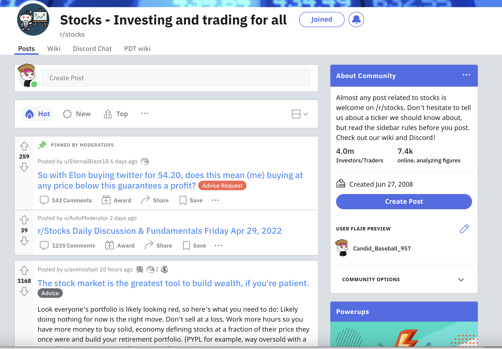

In stock market, investor confidence in stocks leads to more buying activity, which can help to push prices higher. Stocks are an online community about stock investment with 14 years of history on Reddit. More than 3.7 million investors and traders gather there, where they have created plenty of comments and analysis, including advice for stocks, industry news, company discussion, etc. News, opinions, and suggestions from these discussions are real time, specific, and various, which would be useful for investors or traders to know what is happening in markets, and conduct actions based on information they get. Also, for beginners, it would help them to have a quick and better understanding of trading markets.
The data science project would extract key insights from the community by exploratory data analysis, NLP, and machine learning methods. Considering the data is tremendous and changing, big data tools like spark, s3, and hive would be applied. Specifically, valuable tips of stock trading including top 10 positive stocks and negative stocks talked will be demonstrated. Also, hot companies and industries investors care would be shown. In addition, factors that affect or predict votes and comments of a post would be analyzed. Finally, the analysis would be narrow down to a detailed analysis for some specific stocks like TESLA..
In summary, the project would help investors or someone who is interested in stocks obtain practical investment tips, market information, and deep understanding for specific companies.

Business Goal: Identification of top 10 stocks/companies mentioned in stocks subreddit. It would help investors know popular stocks/companies in stock market.
Technical proposal: Identify stock or stock ticker from each comment based on ApeWisdom stock detection method: https://apewisdom.io/methodology/. Specifically, Tickers in a comment or submission if they are written in uppercase letters. For example: AMD, BTC, AAPL, or if they are preceded with a dollar sign. For example: $aapl, $AAPL, $btc. If a ticker is present two or more times in a submission or a comment this will still be counted as a single mention. After identifying the stock in each comment, aggregate them and present the top 10 stocks/companies and the market capital of these 10 companies.
Business Goal: Identification of top 10 industries/countries of stocks mentioned in stocks subreddit. It would help investors know hot industries and countries in stock market.
Technical proposal: After identifying the stocks in comments, join Nasdaq external data to find the industries and countries of these socks. Then write sql functions to aggregate the data that group by industries and countries, present the findings that rank top.
Business Goal: Identification of top words mentioned in stock subreddit.
Technical proposal: Tokenize the comment and remove stop words from them. Present top meaningful words based on counts and TF-IDF (term frequency-inverse document frequency).
Business Goal: Identification of bear or bull market in different periods based on sentiment analysis
Technical proposal: Conduct sentiment analysis for all comments in different period, and assignment positive and negative values to that period. If a period with significant high/low values, it would be determined to be bull/bear market. Also, number of votes and the follow of comments would be considered in analysis. Present time series chart of sentiment values for all comments
Business Goal: Identification of sentiment trend of top 10 stocks mentioned in stock subreddit
Technical proposal: Conduct sentiment analysis for the comments that mentioned one of top 10 stocks, and then aggregate the sentiment values based on different stocks. Present time series chart of sentiment values for top 10 stocks mentioned.
Business Goal: Identification of the relationship between stock price and comment sentiment for top 10 stocks mentioned
Technical proposal: Join Nasdaq data to gain daily stock price and combine them with daily sentiment values of comments that mentioned top 10 stocks. Present time series chart of sentiment values and stock prices for top 10 stocks mentioned.
Business Goal: The Prediction of score of comments. There are many factors that make a comment popular or unpopular, like whether the comment is post by the submitter, whether the comment is positive, and when the comment post. It is interesting to use machine learning methods to answer the questions.
Technical proposal: The goal here is to predict the score of comments. Possible predictors includes whether the comment is post by the submitter, whether the comment is positive, and when the comment post, etc. Specifically, different machine learning models like linear regression, decision tree regression, and gradient-boosted tress would be applied to train the model, and the best one would be selected based on fitting result. Present findings for top factors with important influence, and the prediction results of different models.
Business Goal: The classification of the follow of comments
Technical proposal: The goal here is to classify the comment based whether the comment is followed. Possible predictors includes whether the comment is controversial, the score of comments, the awards of the comment received, etc. Specifically, different machine learning models like logistic regression, random forest, and gradient-boosted trees model would be applied to train the model, and the best one would be selected based on fitting result. Present findings for top factors with important influence, and the prediction results of different models.
Business Goal: Exploratory Data Analysis for TESLA
Technical proposal: First, select comments that mentioned TESLA, and present top meaningful words in different periods in these comments. Second, conduct sentiment analysis for these comments, and present sentiment and stock price change with time. Third, compare the comment count, stock price, market capital change of TESLA with that of FAANG (Meta, Amazon, Apple, Netflix, and Google).
Business Goal: The Prediction for TESLA Stock Price
Technical proposal: Daily stock price up/down compared with the previous day would be the target label. Features may include daily total sentiment values of comments that mentioned TESLA, average text length of these comments, total number of gilds of these comments, total number of awards of these comments, counts of “buy” mentioned in comments, counts of “sell” mentioned in comments, the up/down of controversial comments percentage (compared with the controversial comments percentage of previous day), the number of parent_id, and weekday or weekend. Different classification models like logistic regression, random forest, and gradient-boosted trees model would be applied to train the model, and the best one would be selected based on fitting result. Present findings for top factors with important influence, and the prediction results (accuracy and AUC) of different models.